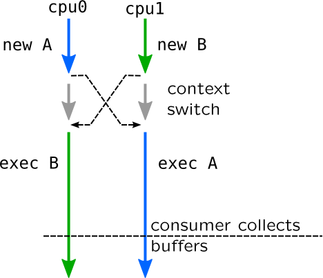

Printing
As we mentioned earlier, DTrace and SystemTap are printing to a special channel established between probe handlers and consumer process. SystemTap maintains multiple channels, and some of them support prioritized printing through log() and warn() functions.
A simplest printing doesn't allow any formatting. It is performed via trace() action in DTrace which accepts only single argument. In SystemTap it is performed through print[d][ln] functions which accept unspecified number of arguments, and may use first argument as delimiter (should be constant) if d suffix is present, and add a newline if ln suffix is present. I.e. printdln(",", $fd, $pathname) will print comma-separated line with two parameters. Formatting output is supported through using printf() function which accepts format string and unspecified number of arguments. Rules for creating format strings are similiar to C standard printf() function including support for various such as %p stands for pointer, setting width and alignment of field, etc. Dynamic tracing languages are strict about types of arguments and format strings.
DTrace allows to print a memory dump using tracemem() action which accepts address and number of bytes to be printed (should be constant). There is no such function in SystemTap, but it can be simulated using for-cycle, kernel_int() functions and printf() or use %m format specifier with width modifier which is mandatory in this case (and sets length of memory area to be printed). Also, in some cases pretty conversion to a strings is allowed, i.e. inet_ntop() in DTrace and ip_ntop() in SystemTap allow to convert IP-address to a string.
To reduce competition for output buffers in multicore systems, SystemTap and DTrace allocate buffers on per-cpu basis. Then they need to extract data from them, they switch buffers and walk over it. Consider following example: process A starts on CPU 0 while process B starts on CPU 1, than context switch occurs and both processes migrating on opposite CPU (this is unrealistic situation for scheduler, so it is only an example) as shown on picture:

In this example you will get the following output:
new A exec B new B exec A
This makes interpretation of output is extremely complicated especially in case of dozens events (such as tracing ZIO pipeline in ZFS filesystem). This problem can be solved only by adding extra key related to a request (such as process ID, like A and B in this example) to a each line and group events in post-processing.
References
Speculations
Predicates is one form to get rid to useless event, but they only allow to decide when probe is firing. What if there are several probes and decision can be made only in the last one? To answer that problem, dynamic tracing languages support speculations. For example you may want to trace only requests which are finished with an error code.
Speculations allow to create independent output buffer for each request using speculation() function which returns id of that buffer. You may put it to an associative array using some vital request information as a key, for example pointer to a structure. While tracing you may either print data from the buffer to a main buffer using commit() function or reject it using discard() function. Maximum number of speculations in DTrace is regulated by nspec tunable.
To add an output to a speculation in DTrace, call speculate() function which accepts single argument -- speculation id. After that call, all subsequent print statements in current probe body will be redirected to a speculation buffer. In SystemTap speculate() accepts two parameters: one for speculation id and second for string to be put into speculation, so you should use sprintf() instead of printf() to print to a buffer.
Speculations are used in Block Input-Output scripts.
References